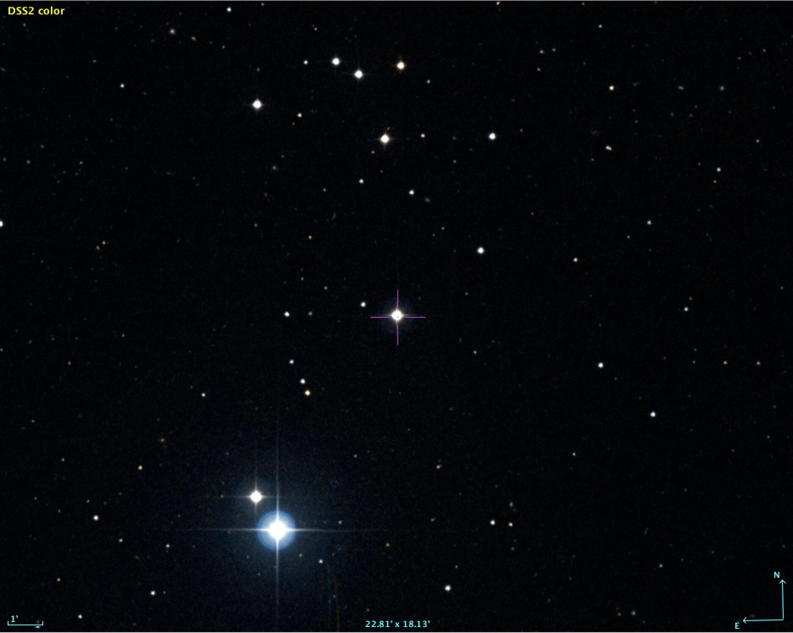

astrophysics
rr lyrae stars, low-mass variable stars, have periodic pulsations that can be used to calculate stellar distances. changes in temperature and luminosity are experienced by the stars as they evolve, and can be used along with metallicity values [Fe/H] to derive a period-luminosity relationship. for more about this research, checkout my poster! [view poster]